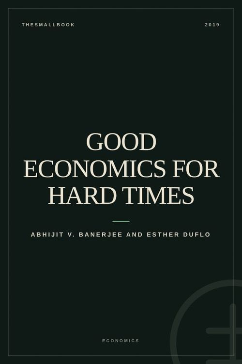

Library › Authors › Abhijit V. Banerjee and Esther Duflo
Books by Abhijit V. Banerjee and Esther Duflo
Abhijit V. Banerjee and Esther Duflo has one book in the library. Every book here is read down to the big idea, the lessons, the lines worth keeping and the actions worth taking. Start with the summary, then buy the full book if it earns a place on your shelf.

Good Economics for Hard Times
2019 · 11 min · 8 lessons
Banerjee and Duflo take the big questions of trade, migration, growth and climate and test them against evidence rather than theory.
Most economic debate is conducted with models built on perfect information and frictionless movement. Banerjee and Duflo show that real people are sticky, misinformed and shaped by where they live, and that policies built on the clean model fail. Their method is evidence first: look at what actually happens, then choose policies that survive contact with people.
Lessons in the summary
- The Model and the World
- Trade Has Winners and Losers
- Migration Moves Less Than It Should
- Growth Is Not a Policy Button
- Why Preferences Are Shaped
- Markets Need Institutions
- Evidence Before Ideology
- What To Do In Hard Times
Lines worth keeping
- Economists are not the only ones who get this wrong. A tidy model is more popular than an accurate one.
- People do not move for small economic advantages. They move when the ground moves.
- Good policy is built from evidence about people, not from a belief in people.
Questions Abhijit V. Banerjee and Esther Duflo helps answer
Read nearby authors next
- Raghuram Rajan 2 books
- Jason Hickel 1 book
- Kate Raworth 1 book
- Robert L. Heilbroner 1 book
- Tim Harford 1 book
Questions Abhijit V. Banerjee and Esther Duflo helps answer
Where should I start with Abhijit V. Banerjee and Esther Duflo? Start with Good Economics for Hard Times: Banerjee and Duflo take the big questions of trade, migration, growth and climate and test them against evidence rather than theory.